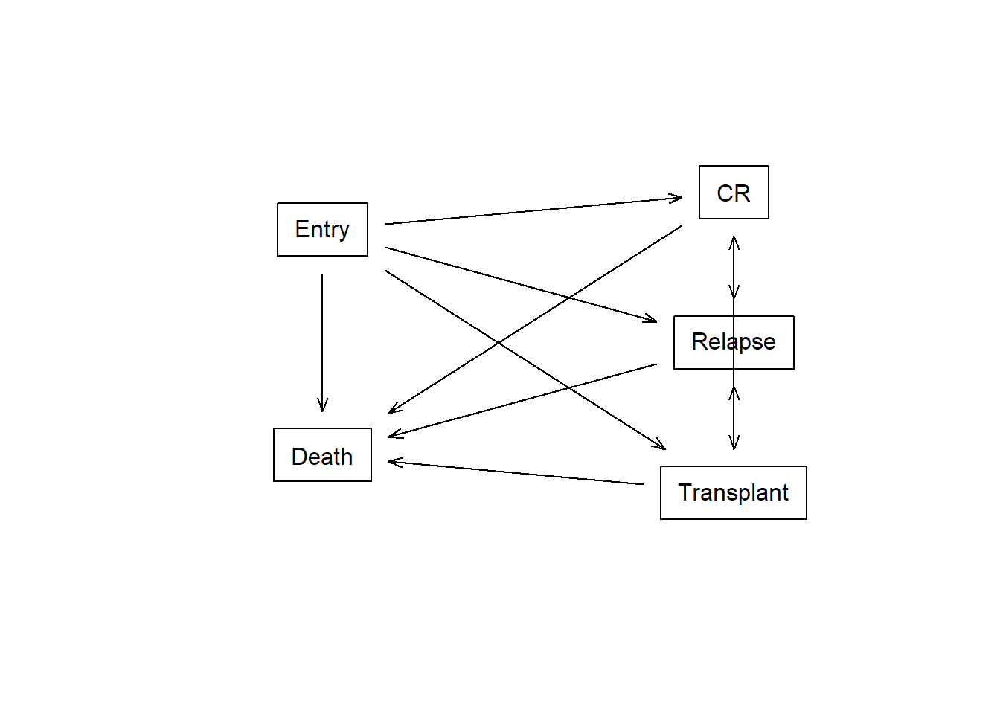

Learning objectives
In this lesson you will
- Understand how censoring plays a role in the
eventglm models
- Explore the different options for censoring models
- Learn how to construct more flexible models for censoring
Setup
Library the survival package and then the eventglm package. We will use some commands from survival to make sense of what is going on in the regression models.
library(survival)
library(eventglm)
How does eventglm estimate the models?
Our main interest is in estimating the parameters of a generalized linear regression model for \(V_i\) conditional on covariates \(X_i\): \[
E(V_i | X_i) = g^{-1}\{X_i^{\top} \beta\},
\] where \(V_i = I(T_i < t, \delta_i = d)\) for some specified time \(t\), cause \(d\), and link function \(g\).
We do not observe \(T_i\) and \(\delta_i\) directly, but rather \(Y_i = \min\{C_i, T_i\}\) where \(C_i\) is the censoring time, and \(\Delta_i \in \{0, 1, \ldots, d\}\) where where 0 indicates censoring occurred before any of the events. The collection of observations will be denoted \(Z_1, \ldots, Z_n\) where \(Z_i = (Y_i, \Delta_i, X_i)\), and are assumed to be independent and identically distributed.
If there were no censoring before time \(t^*\), then the \(V_i\) are all observed for \(i = 1, \ldots, n\) and the parameters could be estimated using standard methods. When that is not the case, the model can be estimated using pseudo-observations Andersen, Klein, and Rosthøj (2003). Let \(P_i\) denote the pseudo-observation for subject \(i\) which will remain abstract for the moment. When the pseudo-observations are computed in a way that \[
E(P_i | X_i) = E(V_i | X_i) + o_p(1)
\] in large samples, then estimating \(\beta\) by solving the estimating equations \[
\sum_{i = 1}^n \frac{\partial g^{-1}}{\partial \beta} A_i^{-1} \{P_i - g^{-1}(X_i^{\top} \beta)\} = \sum_{i = 1}^n U_i(\beta) = 0
\] yields consistent and asymptotically normal estimates \(\hat{\beta}\).
Let \(\theta = E(V_i)\) denote the cumulative summary statistic of interest but marginal with respect to the covariates (i.e., ignoring the covariates) and \(\hat{\theta}\) an estimate of that quantity using all of the observations. The estimator is generally nonparametric, e.g., the Aalen-Johansen estimator (Aalen and Johansen 1978) of the cumulative incidence curve, or the Kaplan-Meier estimator (Kaplan and Meier 1958) of the survivor curve, though recently parametric estimators of the marginal quantities have been suggested Sabathé et al. (2020).
Let \(\hat{\theta}_{-i}\) denote the jackknife estimate obtained by leaving the \(i\)th observation out of the sample and recomputing the estimate. Then the \(i\)th jackknife pseudo-observation is \[
P_i = n \hat{\theta} - (n - 1) \hat{\theta}_{-i}.
\] If censoring is completely independent, then the asymptotic conditional unbiasedness condition holds.
If we instead assume for some subset of covariates \(\tilde{X}_i\) that \((T_i, X_i, \Delta_i) \perp C_i | \tilde{X}_i\) then we can use different approaches to computing the pseudo-observations that will satisfy the asymptotic conditional unbiasedness. When \(\tilde{X}_i\) only contains categorical covariates with a finite set of combinations, Andersen and Pohar Perme (2010) suggested computing the jackknife \(P_i\) separately for each combination of values in \(\tilde{X}_i\). This is implemented in our package and can be obtained using the model.censoring = "stratified" option.
If \(\tilde{X}_i\) contains continuous covariates, then we can model the censoring mechanism conditional on those covariates and use an inverse probability of censoring weighted marginal estimator. Modeling the censoring process conditional on covariates and using inverse probability of censoring weighted estimators was first explored in Binder, Gerds, and Andersen (2014). This was further developed in Overgaard, Parner, and Pedersen (2019) who showed that asymptotic conditional unbiasedness holds for inverse probability of censoring weighted estimators of the cumulative quantity \(E(V_i)\).
Censoring models
By default, we assume that time to censoring is independent of the time to the event, and of all covariates in the model. This is more restrictive than parametric survival models, or Cox regression, which only assumes that censoring time is conditionally independent of event time given the covariates in the model. We provide several options to relax that assumption using the model.censoring and formula.censoring options. The first is to compute stratified pseudo observations, which assumes that the censoring is independent given a set of categorical covariates:
colon.ci.adj <- cumincglm(Surv(time, status) ~ rx + age + node4, time = 2500, data = colon)
colon.ci.cen1 <- cumincglm(Surv(time, status) ~ rx + age + node4, time = 2500,
data = colon, model.censoring = "stratified",
formula.censoring = ~ rx)
Next, we can assume that the time to censoring follows a Cox model given a set of covariates. By default, the same covariate formula (right hand side) as the main model is used, but any formula can be specified. We can also use Aalens additive hazards model instead of a Cox model for the censoring distribution. Then inverse probability of censoring weighted pseudo observations are used (Overgaard, Parner, and Pedersen 2019). According to a simulation study, the stratified option works quite well even when the censoring model is misspecified, and the Aalen additive model tends to work better than the Cox model.
The ipcw.method argument determines the weighting method used, with the default being “binder” and the other option is “hajek.” The intercept estimate tends to be off when using “binder” so be aware of that if it is important to you.
colon.ci.cen2 <- cumincglm(Surv(time, status) ~ rx + age + node4, time = 2500,
data = colon, model.censoring = "coxph",
formula.censoring = ~ rx + age + node4)
colon.ci.cen3 <- cumincglm(Surv(time, status) ~ rx + age + node4, time = 2500,
data = colon, model.censoring = "aareg",
formula.censoring = ~ rx + age + node4)
colon.ci.cen2h <- cumincglm(Surv(time, status) ~ rx + age + node4, time = 2500,
data = colon, model.censoring = "coxph",
formula.censoring = ~ rx + age + node4, ipcw.method = "hajek")
colon.ci.cen3h <- cumincglm(Surv(time, status) ~ rx + age + node4, time = 2500,
data = colon, model.censoring = "aareg",
formula.censoring = ~ rx + age + node4, ipcw.method = "hajek")
round(cbind("indep" = coef(colon.ci.adj),
"strat" = coef(colon.ci.cen1),
"coxipcw" = coef(colon.ci.cen2),
"aalenipcw" = coef(colon.ci.cen3),
"coxipcw.hajek" = coef(colon.ci.cen2h),
"aalenipcw.hajek" = coef(colon.ci.cen3h)), 3)
## indep strat coxipcw aalenipcw coxipcw.hajek aalenipcw.hajek
## (Intercept) 0.318 0.314 0.535 0.596 0.297 0.317
## rxLev -0.034 -0.035 -0.034 -0.036 -0.031 -0.036
## rxLev+5FU -0.127 -0.128 -0.127 -0.127 -0.110 -0.129
## age 0.002 0.002 0.002 0.002 0.003 0.002
## node4 0.332 0.334 0.335 0.334 0.330 0.335
In these models, the IPCW weights are returned in the element called “ipcw.weights.” If there are multiple time points, this will be a matrix with one column per time point.
colon.ci.cen2b <- cumincglm(Surv(time, status) ~ rx + age + node4,
time = c(500, 1000, 2500),
data = colon, model.censoring = "coxph",
formula.censoring = ~ rx + age + node4)
head(colon.ci.cen2b$ipcw.weights)
## [,1] [,2] [,3]
## [1,] 0.9988156 0.9988156 0.9936251
## [2,] 0.9988733 0.9988733 0.3867807
## [3,] 0.9983923 0.9983923 0.9983923
## [4,] 1.0000000 1.0000000 1.0000000
## [5,] 0.9984112 0.9984112 0.9984112
## [6,] 0.9987135 0.9987135 0.9911426
summary(colon.ci.cen2b$ipcw.weights)
## V1 V2 V3
## Min. :0.9983 Min. :0.9983 Min. :0.2702
## 1st Qu.:0.9987 1st Qu.:0.9987 1st Qu.:0.4832
## Median :0.9988 Median :0.9988 Median :0.9094
## Mean :0.9989 Mean :0.9989 Mean :0.7680
## 3rd Qu.:0.9989 3rd Qu.:0.9989 3rd Qu.:0.9988
## Max. :1.0000 Max. :1.0000 Max. :1.0000
Left truncation and delayed entry
A new feature in eventglm (available in version 1.3.0) is a module to fit models that allow for delayed entry/left truncation. This is done by specifying 2 times and an event in the call to Surv and using “infjack” for the model.censoring argument. Another assumption in this settings is that the entry time is independent of the time to event and all covariates in the model. Currently there are no options to relax that. Let’s look at an example using the myeloid dataset from the survival package. This is a more complex multi-state model, but for now we are only considering a model for the transition from complete response (CR) to death, conditional on having reached complete response. The time from entry to complete response determines the entry time.
connect <- matrix(0, nrow = 5, ncol = 5,
dimnames = lapply(1:2, \(i) c("Entry", "Death",
"CR", "Relapse", "Transplant")))
connect[1, 2:5] <- 1
connect[5, 2:5] <- 1
connect[3, 2:5] <- 1
connect[4, c(2, 4, 5)] <- 1
statefig(c(2, 3), connect)

mdata <- tmerge(myeloid[!is.na(myeloid$crtime),1:2], myeloid[!is.na(myeloid$crtime),],
id=id, death= event(futime, death),
cr = event(crtime))
mdata <- mdata[mdata$cr == 0,]
head(mdata)
## id trt tstart tstop death cr
## 2 1 B 44 235 1 0
## 4 3 A 38 1983 0 0
## 6 4 B 25 2137 0 0
## 8 5 B 56 326 1 0
## 10 8 A 34 446 1 0
## 12 9 B 28 1695 0 0
Now the model and a comparison using survfit. This approach uses a method called the infinitesimal jackknife to compute the pseudo-observations.
sfit <- survfit(Surv(tstart, tstop, death) ~ trt, data = mdata)
sfitm <- summary(sfit, times = c(750))
tinf <- cumincglm(Surv(tstart, tstop, death) ~ trt, data = mdata,
time = 750, model.censoring = "infjack", survival = TRUE)
cbind(eventglm = tinf$coefficients,
survfit = c(sfitm$surv[1], diff(sfitm$surv)))
## eventglm survfit
## (Intercept) 0.5772110 0.5744712
## trtB 0.1330378 0.1373734
Let \(T(P)\) denote the functional of interest (e.g., the Aalen-Johansen functional) and \(T(\mathbb{P}_n)\) its empirical counterpart, where \(\mathbb{P}_n = n^{-1}\sum_{i=1}^n \delta(x_i)\) is the empirical measure based on \(n\) iid observations.
The jackknife pseudo-observations can be written
\[T(\mathbb{P}_n) + (n - 1) (T(\mathbb{P}_n) - T(\mathbb{P}_{ni})) =\] \[T(\mathbb{P}_n) + (n - 1) (T(\mathbb{P}_n) - T\left(\frac{n\mathbb{P}_{n} - \delta(x_i)}{n-1}\right))\]
where \(\mathbb{P}_{ni}\) is the empirical measure leaving out the \(i\)th observation.
The influence function of \(T\) evaluated at \(P\) is \[\phi_P(x) = \partial T(P - \delta(x))\] is a functional derivative, i.e., an approximation of the original functional.
\[\phi_P(x) \approx \lim_{\epsilon \rightarrow 0}\frac{T(P) - T(P + \epsilon(\delta(x) - P))}{\epsilon}\]
If we can calculate this, then \(\phi_{\mathbb{P}_n}(x_i)\) gives us the perturbation in the estimate infinitesimally close to \(x_i\), whereas the ordinary jackknife is \(1/n\) units away. See Efron (1982), Chapter 6.
These are computed already in survival for variance estimation, which is what the pseudo_infjack uses. These can be computed stratified on a finite set of categorical covariates using the model.censoring argument.
Stop and think
In your research, what censoring assumptions are plausible/reasonable? How would you model the censoring to operate under those assumptions?
References
Aalen, Odd O, and Søren Johansen. 1978. “An Empirical Transition Matrix for Non-Homogeneous Markov Chains Based on Censored Observations.” Scandinavian Journal of Statistics, 141–50.
Andersen, Per Kragh, John P. Klein, and Susanne Rosthøj. 2003.
“Generalised Linear Models for Correlated Pseudo‐observations, with Applications to Multi‐state Models.” Biometrika 90 (1): 15–27.
https://doi.org/10.1093/biomet/90.1.15.
Andersen, Per Kragh, and Maja Pohar Perme. 2010.
“Pseudo-Observations in Survival Analysis.” Statistical Methods in Medical Research 19 (1): 71–99.
https://doi.org/10.1177/0962280209105020.
Binder, Nadine, Thomas A Gerds, and Per Kragh Andersen. 2014. “Pseudo-Observations for Competing Risks with Covariate Dependent Censoring.” Lifetime Data Analysis 20 (2): 303–15.
Kaplan, Edward L, and Paul Meier. 1958. “Nonparametric Estimation from Incomplete Observations.” Journal of the American Statistical Association 53 (282): 457–81.
Nygård Johansen, Martin, Søren Lundbye-Christensen, and Erik Thorlund Parner. 2020. “Regression Models Using Parametric Pseudo-Observations.” Statistics in Medicine.
Overgaard, Morten, Erik Thorlund Parner, and Jan Pedersen. 2019. “Pseudo-Observations Under Covariate-Dependent Censoring.” Journal of Statistical Planning and Inference 202: 112–22.
Sabathé, Camille, Per K Andersen, Catherine Helmer, Thomas A Gerds, Hélène Jacqmin-Gadda, and Pierre Joly. 2020. “Regression Analysis in an Illness-Death Model with Interval-Censored Data: A Pseudo-Value Approach.” Statistical Methods in Medical Research 29 (3): 752–64.
LS0tDQp0aXRsZTogIkNlbnNvcmluZyBhc3N1bXB0aW9ucyBhbmQgbW9kZWxzIg0Kb3V0cHV0Og0KICBodG1sX2RvY3VtZW50Og0KICAgIGNvZGVfZm9sZGluZzogc2hvdw0KYmlibGlvZ3JhcGh5OiByZWZzLmJpYg0KLS0tDQoNCiMjIyBMZWFybmluZyBvYmplY3RpdmVzIHsuYWxlcnQgLmFsZXJ0LXN1Y2Nlc3N9DQoNCkluIHRoaXMgbGVzc29uIHlvdSB3aWxsIA0KDQoxLiBVbmRlcnN0YW5kIGhvdyBjZW5zb3JpbmcgcGxheXMgYSByb2xlIGluIHRoZSBgZXZlbnRnbG1gIG1vZGVscw0KMi4gRXhwbG9yZSB0aGUgZGlmZmVyZW50IG9wdGlvbnMgZm9yIGNlbnNvcmluZyBtb2RlbHMNCjMuIExlYXJuIGhvdyB0byBjb25zdHJ1Y3QgbW9yZSBmbGV4aWJsZSBtb2RlbHMgZm9yIGNlbnNvcmluZw0KDQoNCiMjIFNldHVwDQoNCkxpYnJhcnkgdGhlIGBzdXJ2aXZhbGAgcGFja2FnZSBhbmQgdGhlbiB0aGUgYGV2ZW50Z2xtYCBwYWNrYWdlLiBXZSB3aWxsIHVzZSBzb21lIGNvbW1hbmRzIGZyb20gYHN1cnZpdmFsYCB0byBtYWtlIHNlbnNlIG9mIHdoYXQgaXMgZ29pbmcgb24gaW4gdGhlIHJlZ3Jlc3Npb24gbW9kZWxzLg0KDQoNCmBgYHtyfQ0KbGlicmFyeShzdXJ2aXZhbCkNCmxpYnJhcnkoZXZlbnRnbG0pDQpgYGANCg0KIyMgSG93IGRvZXMgYGV2ZW50Z2xtYCBlc3RpbWF0ZSB0aGUgbW9kZWxzPw0KDQpPdXIgbWFpbiBpbnRlcmVzdCBpcyBpbiBlc3RpbWF0aW5nIHRoZSBwYXJhbWV0ZXJzIG9mIGEgZ2VuZXJhbGl6ZWQgbGluZWFyIHJlZ3Jlc3Npb24gbW9kZWwgZm9yICRWX2kkIGNvbmRpdGlvbmFsIG9uIGNvdmFyaWF0ZXMgJFhfaSQ6IA0KXFsNCkUoVl9pIHwgWF9pKSA9IGdeey0xfVx7WF9pXntcdG9wfSBcYmV0YVx9LA0KXF0NCndoZXJlICRWX2kgPSBJKFRfaSA8IHQsIFxkZWx0YV9pID0gZCkkIGZvciBzb21lIHNwZWNpZmllZCB0aW1lICR0JCwgY2F1c2UgJGQkLCBhbmQgbGluayBmdW5jdGlvbiAkZyQuDQoNCldlIGRvIG5vdCBvYnNlcnZlICRUX2kkIGFuZCAkXGRlbHRhX2kkIGRpcmVjdGx5LCBidXQgcmF0aGVyICRZX2kgPSBcbWluXHtDX2ksIFRfaVx9JCB3aGVyZSAkQ19pJCBpcyB0aGUgY2Vuc29yaW5nIHRpbWUsIGFuZCAkXERlbHRhX2kgXGluIFx7MCwgMSwgXGxkb3RzLCBkXH0kIHdoZXJlIHdoZXJlIDAgaW5kaWNhdGVzIGNlbnNvcmluZyBvY2N1cnJlZCBiZWZvcmUgYW55IG9mIHRoZSBldmVudHMuIFRoZSBjb2xsZWN0aW9uIG9mIG9ic2VydmF0aW9ucyB3aWxsIGJlIGRlbm90ZWQgJFpfMSwgXGxkb3RzLCBaX24kIHdoZXJlICRaX2kgPSAoWV9pLCBcRGVsdGFfaSwgWF9pKSQsIGFuZCBhcmUgYXNzdW1lZCB0byBiZSBpbmRlcGVuZGVudCBhbmQgaWRlbnRpY2FsbHkgZGlzdHJpYnV0ZWQuDQoNCklmIHRoZXJlIHdlcmUgbm8gY2Vuc29yaW5nIGJlZm9yZSB0aW1lICR0XiokLCB0aGVuIHRoZSAkVl9pJCBhcmUgYWxsIG9ic2VydmVkIGZvciAkaSA9IDEsIFxsZG90cywgbiQgYW5kIHRoZSBwYXJhbWV0ZXJzIGNvdWxkIGJlIGVzdGltYXRlZCB1c2luZyBzdGFuZGFyZCBtZXRob2RzLiBXaGVuIHRoYXQgaXMgbm90IHRoZSBjYXNlLCB0aGUgbW9kZWwgY2FuIGJlIGVzdGltYXRlZCB1c2luZyBwc2V1ZG8tb2JzZXJ2YXRpb25zIEBhbmRlcnNlbl9nZW5lcmFsaXNlZF8yMDAzLiBMZXQgJFBfaSQgZGVub3RlIHRoZSBwc2V1ZG8tb2JzZXJ2YXRpb24gZm9yIHN1YmplY3QgJGkkIHdoaWNoIHdpbGwgcmVtYWluIGFic3RyYWN0IGZvciB0aGUgbW9tZW50LiBXaGVuIHRoZSBwc2V1ZG8tb2JzZXJ2YXRpb25zIGFyZSBjb21wdXRlZCBpbiBhIHdheSB0aGF0IA0KXFsNCkUoUF9pIHwgWF9pKSA9IEUoVl9pIHwgWF9pKSArIG9fcCgxKSANClxdDQppbiBsYXJnZSBzYW1wbGVzLCB0aGVuIGVzdGltYXRpbmcgJFxiZXRhJCBieSBzb2x2aW5nIHRoZSBlc3RpbWF0aW5nIGVxdWF0aW9ucw0KXFsNClxzdW1fe2kgPSAxfV5uIFxmcmFje1xwYXJ0aWFsIGdeey0xfX17XHBhcnRpYWwgXGJldGF9IEFfaV57LTF9IFx7UF9pIC0gZ157LTF9KFhfaV57XHRvcH0gXGJldGEpXH0gPSBcc3VtX3tpID0gMX1ebiBVX2koXGJldGEpID0gIDANClxdDQp5aWVsZHMgY29uc2lzdGVudCBhbmQgYXN5bXB0b3RpY2FsbHkgbm9ybWFsIGVzdGltYXRlcyAkXGhhdHtcYmV0YX0kLiANCg0KTGV0ICRcdGhldGEgPSBFKFZfaSkkIGRlbm90ZSB0aGUgY3VtdWxhdGl2ZSBzdW1tYXJ5IHN0YXRpc3RpYyBvZiBpbnRlcmVzdCBidXQgbWFyZ2luYWwgd2l0aCByZXNwZWN0IHRvIHRoZSBjb3ZhcmlhdGVzIChpLmUuLCBpZ25vcmluZyB0aGUgY292YXJpYXRlcykgYW5kICRcaGF0e1x0aGV0YX0kIGFuIGVzdGltYXRlIG9mIHRoYXQgcXVhbnRpdHkgdXNpbmcgYWxsIG9mIHRoZSBvYnNlcnZhdGlvbnMuIFRoZSBlc3RpbWF0b3IgaXMgZ2VuZXJhbGx5IG5vbnBhcmFtZXRyaWMsIGUuZy4sIHRoZSBBYWxlbi1Kb2hhbnNlbiBlc3RpbWF0b3IgW0BhYWxlbjE5NzhlbXBpcmljYWxdIG9mIHRoZSBjdW11bGF0aXZlIGluY2lkZW5jZSBjdXJ2ZSwgb3IgdGhlIEthcGxhbi1NZWllciBlc3RpbWF0b3IgW0BrYXBsYW4xOTU4bm9ucGFyYW1ldHJpY10gb2YgdGhlIHN1cnZpdm9yIGN1cnZlLCB0aG91Z2ggcmVjZW50bHkgcGFyYW1ldHJpYyBlc3RpbWF0b3JzIG9mIHRoZSBtYXJnaW5hbCBxdWFudGl0aWVzIGhhdmUgYmVlbiBzdWdnZXN0ZWQgW0BueWdhYXJkMjAyMHJlZ3Jlc3Npb24sIEBzYWJhdGhlMjAyMHJlZ3Jlc3Npb25dLiANCg0KTGV0ICRcaGF0e1x0aGV0YX1fey1pfSQgZGVub3RlIHRoZSBqYWNra25pZmUgZXN0aW1hdGUgb2J0YWluZWQgYnkgbGVhdmluZyB0aGUNCiRpJHRoIG9ic2VydmF0aW9uIG91dCBvZiB0aGUgc2FtcGxlIGFuZCByZWNvbXB1dGluZyB0aGUgZXN0aW1hdGUuIFRoZW4NCnRoZSAkaSR0aCBqYWNra25pZmUgcHNldWRvLW9ic2VydmF0aW9uIGlzDQpcWw0KUF9pID0gbiBcaGF0e1x0aGV0YX0gLSAobiAtIDEpIFxoYXR7XHRoZXRhfV97LWl9Lg0KXF0NCklmIGNlbnNvcmluZyBpcyBjb21wbGV0ZWx5IGluZGVwZW5kZW50LCB0aGVuIHRoZSBhc3ltcHRvdGljIGNvbmRpdGlvbmFsIHVuYmlhc2VkbmVzcyBjb25kaXRpb24gaG9sZHMuIA0KDQpJZiB3ZSBpbnN0ZWFkIGFzc3VtZSBmb3Igc29tZSBzdWJzZXQgb2YgY292YXJpYXRlcyAkXHRpbGRle1h9X2kkIHRoYXQgJChUX2ksIFhfaSwgXERlbHRhX2kpIFxwZXJwIENfaSB8IFx0aWxkZXtYfV9pJCB0aGVuIHdlIGNhbiB1c2UgZGlmZmVyZW50IGFwcHJvYWNoZXMgdG8gY29tcHV0aW5nIHRoZSBwc2V1ZG8tb2JzZXJ2YXRpb25zIHRoYXQgd2lsbCBzYXRpc2Z5IHRoZSBhc3ltcHRvdGljIGNvbmRpdGlvbmFsIHVuYmlhc2VkbmVzcy4gV2hlbiAkXHRpbGRle1h9X2kkIG9ubHkgY29udGFpbnMgY2F0ZWdvcmljYWwgY292YXJpYXRlcyB3aXRoIGEgZmluaXRlIHNldCBvZiBjb21iaW5hdGlvbnMsIEBhbmRlcnNlbl9wc2V1ZG8tb2JzZXJ2YXRpb25zXzIwMTAgc3VnZ2VzdGVkIGNvbXB1dGluZyB0aGUgamFja2tuaWZlICRQX2kkIHNlcGFyYXRlbHkgZm9yIGVhY2ggY29tYmluYXRpb24gb2YgdmFsdWVzIGluICRcdGlsZGV7WH1faSQuIFRoaXMgaXMgaW1wbGVtZW50ZWQgaW4gb3VyIHBhY2thZ2UgYW5kIGNhbiBiZSBvYnRhaW5lZCB1c2luZyB0aGUgYCBtb2RlbC5jZW5zb3JpbmcgPSAic3RyYXRpZmllZCJgIG9wdGlvbi4gDQoNCklmICRcdGlsZGV7WH1faSQgY29udGFpbnMgY29udGludW91cyBjb3ZhcmlhdGVzLCB0aGVuIHdlIGNhbiBtb2RlbCB0aGUgY2Vuc29yaW5nIG1lY2hhbmlzbSBjb25kaXRpb25hbCBvbiB0aG9zZSBjb3ZhcmlhdGVzIGFuZCB1c2UgYW4gaW52ZXJzZSBwcm9iYWJpbGl0eSBvZiBjZW5zb3Jpbmcgd2VpZ2h0ZWQgbWFyZ2luYWwgZXN0aW1hdG9yLiBNb2RlbGluZyB0aGUgY2Vuc29yaW5nIHByb2Nlc3MgY29uZGl0aW9uYWwgb24gY292YXJpYXRlcyBhbmQgdXNpbmcgaW52ZXJzZSBwcm9iYWJpbGl0eSBvZiBjZW5zb3Jpbmcgd2VpZ2h0ZWQgZXN0aW1hdG9ycyB3YXMgZmlyc3QgZXhwbG9yZWQgaW4gQGJpbmRlcjIwMTRwc2V1ZG8uIFRoaXMgd2FzIGZ1cnRoZXIgZGV2ZWxvcGVkIGluIEBvdmVyZ2FhcmQyMDE5cHNldWRvIHdobyBzaG93ZWQgdGhhdCBhc3ltcHRvdGljIGNvbmRpdGlvbmFsIHVuYmlhc2VkbmVzcyBob2xkcyBmb3IgaW52ZXJzZSBwcm9iYWJpbGl0eSBvZiBjZW5zb3Jpbmcgd2VpZ2h0ZWQgZXN0aW1hdG9ycyBvZiB0aGUgY3VtdWxhdGl2ZSBxdWFudGl0eSAkRShWX2kpJC4NCg0KIyMgQ2Vuc29yaW5nIG1vZGVscw0KDQpCeSBkZWZhdWx0LCB3ZSBhc3N1bWUgdGhhdCB0aW1lIHRvIGNlbnNvcmluZyBpcyBpbmRlcGVuZGVudCBvZiB0aGUgdGltZSB0byB0aGUgZXZlbnQsIF9fYW5kIG9mIGFsbCBjb3ZhcmlhdGVzIGluIHRoZSBtb2RlbF9fLiBUaGlzIGlzIG1vcmUgcmVzdHJpY3RpdmUgdGhhbiBwYXJhbWV0cmljIHN1cnZpdmFsIG1vZGVscywgb3IgQ294IHJlZ3Jlc3Npb24sIHdoaWNoIG9ubHkgYXNzdW1lcyB0aGF0IGNlbnNvcmluZyB0aW1lIGlzIGNvbmRpdGlvbmFsbHkgaW5kZXBlbmRlbnQgb2YgZXZlbnQgdGltZSBnaXZlbiB0aGUgY292YXJpYXRlcyBpbiB0aGUgbW9kZWwuIFdlIHByb3ZpZGUgc2V2ZXJhbCBvcHRpb25zIHRvIHJlbGF4IHRoYXQgYXNzdW1wdGlvbiB1c2luZyB0aGUgYG1vZGVsLmNlbnNvcmluZ2AgYW5kIGBmb3JtdWxhLmNlbnNvcmluZ2Agb3B0aW9ucy4gVGhlIGZpcnN0IGlzIHRvIGNvbXB1dGUgc3RyYXRpZmllZCBwc2V1ZG8gb2JzZXJ2YXRpb25zLCB3aGljaCBhc3N1bWVzIHRoYXQgdGhlIGNlbnNvcmluZyBpcyBpbmRlcGVuZGVudCBnaXZlbiBhIHNldCBvZiBjYXRlZ29yaWNhbCBjb3ZhcmlhdGVzOiANCg0KYGBge3J9DQoNCmNvbG9uLmNpLmFkaiA8LSBjdW1pbmNnbG0oU3Vydih0aW1lLCBzdGF0dXMpIH4gcnggKyBhZ2UgKyBub2RlNCwgdGltZSA9IDI1MDAsIGRhdGEgPSBjb2xvbikNCmNvbG9uLmNpLmNlbjEgPC0gY3VtaW5jZ2xtKFN1cnYodGltZSwgc3RhdHVzKSB+IHJ4ICsgYWdlICsgbm9kZTQsIHRpbWUgPSAyNTAwLCANCiAgICAgICAgICAgICAgICAgICAgICAgICAgIGRhdGEgPSBjb2xvbiwgbW9kZWwuY2Vuc29yaW5nID0gInN0cmF0aWZpZWQiLCANCiAgICAgICAgICAgICAgICAgICAgICAgICAgIGZvcm11bGEuY2Vuc29yaW5nID0gfiByeCkNCmBgYA0KDQpOZXh0LCB3ZSBjYW4gYXNzdW1lIHRoYXQgdGhlIHRpbWUgdG8gY2Vuc29yaW5nIGZvbGxvd3MgYSBDb3ggbW9kZWwgZ2l2ZW4gYSBzZXQgb2YgY292YXJpYXRlcy4gQnkgZGVmYXVsdCwgdGhlIHNhbWUgY292YXJpYXRlIGZvcm11bGEgKHJpZ2h0IGhhbmQgc2lkZSkgYXMgdGhlIG1haW4gbW9kZWwgaXMgdXNlZCwgYnV0IGFueSBmb3JtdWxhIGNhbiBiZSBzcGVjaWZpZWQuIFdlIGNhbiBhbHNvIHVzZSBBYWxlbnMgYWRkaXRpdmUgaGF6YXJkcyBtb2RlbCBpbnN0ZWFkIG9mIGEgQ294IG1vZGVsIGZvciB0aGUgY2Vuc29yaW5nIGRpc3RyaWJ1dGlvbi4gVGhlbiBpbnZlcnNlIHByb2JhYmlsaXR5IG9mIGNlbnNvcmluZyB3ZWlnaHRlZCBwc2V1ZG8gb2JzZXJ2YXRpb25zIGFyZSB1c2VkIFtAb3ZlcmdhYXJkMjAxOXBzZXVkb10uIEFjY29yZGluZyB0byBhIHNpbXVsYXRpb24gc3R1ZHksIHRoZSBzdHJhdGlmaWVkIG9wdGlvbiB3b3JrcyBxdWl0ZSB3ZWxsIGV2ZW4gd2hlbiB0aGUgY2Vuc29yaW5nIG1vZGVsIGlzIG1pc3NwZWNpZmllZCwgYW5kIHRoZSBBYWxlbiBhZGRpdGl2ZSBtb2RlbCB0ZW5kcyB0byB3b3JrIGJldHRlciB0aGFuIHRoZSBDb3ggbW9kZWwuIA0KDQpUaGUgYGlwY3cubWV0aG9kYCBhcmd1bWVudCBkZXRlcm1pbmVzIHRoZSB3ZWlnaHRpbmcgbWV0aG9kIHVzZWQsIHdpdGggdGhlIGRlZmF1bHQgYmVpbmcgImJpbmRlciIgYW5kIHRoZSBvdGhlciBvcHRpb24gaXMgImhhamVrIi4gVGhlIGludGVyY2VwdCBlc3RpbWF0ZSB0ZW5kcyB0byBiZSBvZmYgd2hlbiB1c2luZyAiYmluZGVyIiBzbyBiZSBhd2FyZSBvZiB0aGF0IGlmIGl0IGlzIGltcG9ydGFudCB0byB5b3UuIA0KDQpgYGB7cn0NCmNvbG9uLmNpLmNlbjIgPC0gY3VtaW5jZ2xtKFN1cnYodGltZSwgc3RhdHVzKSB+IHJ4ICsgYWdlICsgbm9kZTQsIHRpbWUgPSAyNTAwLCANCiAgICAgICAgICAgICAgICAgICAgICAgICAgIGRhdGEgPSBjb2xvbiwgbW9kZWwuY2Vuc29yaW5nID0gImNveHBoIiwgDQogICAgICAgICAgICAgICAgICAgICAgICAgICBmb3JtdWxhLmNlbnNvcmluZyA9IH4gcnggKyBhZ2UgKyBub2RlNCkNCmNvbG9uLmNpLmNlbjMgPC0gY3VtaW5jZ2xtKFN1cnYodGltZSwgc3RhdHVzKSB+IHJ4ICsgYWdlICsgbm9kZTQsIHRpbWUgPSAyNTAwLCANCiAgICAgICAgICAgICAgICAgICAgICAgICAgIGRhdGEgPSBjb2xvbiwgbW9kZWwuY2Vuc29yaW5nID0gImFhcmVnIiwgDQogICAgICAgICAgICAgICAgICAgICAgICAgICBmb3JtdWxhLmNlbnNvcmluZyA9IH4gcnggKyBhZ2UgKyBub2RlNCkNCg0KY29sb24uY2kuY2VuMmggPC0gY3VtaW5jZ2xtKFN1cnYodGltZSwgc3RhdHVzKSB+IHJ4ICsgYWdlICsgbm9kZTQsIHRpbWUgPSAyNTAwLCANCiAgICAgICAgICAgICAgICAgICAgICAgICAgIGRhdGEgPSBjb2xvbiwgbW9kZWwuY2Vuc29yaW5nID0gImNveHBoIiwgDQogICAgICAgICAgICAgICAgICAgICAgICAgICBmb3JtdWxhLmNlbnNvcmluZyA9IH4gcnggKyBhZ2UgKyBub2RlNCwgaXBjdy5tZXRob2QgPSAiaGFqZWsiKQ0KY29sb24uY2kuY2VuM2ggPC0gY3VtaW5jZ2xtKFN1cnYodGltZSwgc3RhdHVzKSB+IHJ4ICsgYWdlICsgbm9kZTQsIHRpbWUgPSAyNTAwLCANCiAgICAgICAgICAgICAgICAgICAgICAgICAgIGRhdGEgPSBjb2xvbiwgbW9kZWwuY2Vuc29yaW5nID0gImFhcmVnIiwgDQogICAgICAgICAgICAgICAgICAgICAgICAgICBmb3JtdWxhLmNlbnNvcmluZyA9IH4gcnggKyBhZ2UgKyBub2RlNCwgaXBjdy5tZXRob2QgPSAiaGFqZWsiKQ0KDQpyb3VuZChjYmluZCgiaW5kZXAiID0gY29lZihjb2xvbi5jaS5hZGopLA0KICAic3RyYXQiID0gY29lZihjb2xvbi5jaS5jZW4xKSwNCiAgImNveGlwY3ciID0gY29lZihjb2xvbi5jaS5jZW4yKSwNCiAgImFhbGVuaXBjdyIgPSBjb2VmKGNvbG9uLmNpLmNlbjMpLA0KICAiY294aXBjdy5oYWplayIgPSBjb2VmKGNvbG9uLmNpLmNlbjJoKSwNCiAgImFhbGVuaXBjdy5oYWplayIgPSBjb2VmKGNvbG9uLmNpLmNlbjNoKSksIDMpDQpgYGANCg0KSW4gdGhlc2UgbW9kZWxzLCB0aGUgSVBDVyB3ZWlnaHRzIGFyZSByZXR1cm5lZCBpbiB0aGUgZWxlbWVudCBjYWxsZWQgImlwY3cud2VpZ2h0cyIuIElmIHRoZXJlIGFyZSBtdWx0aXBsZSB0aW1lIHBvaW50cywgdGhpcyB3aWxsIGJlIGEgbWF0cml4IHdpdGggb25lIGNvbHVtbiBwZXIgdGltZSBwb2ludC4gDQoNCmBgYHtyfQ0KY29sb24uY2kuY2VuMmIgPC0gY3VtaW5jZ2xtKFN1cnYodGltZSwgc3RhdHVzKSB+IHJ4ICsgYWdlICsgbm9kZTQsIA0KICAgICAgICAgICAgICAgICAgICAgICAgICAgIHRpbWUgPSBjKDUwMCwgMTAwMCwgMjUwMCksIA0KICAgICAgICAgICAgICAgICAgICAgICAgICAgZGF0YSA9IGNvbG9uLCBtb2RlbC5jZW5zb3JpbmcgPSAiY294cGgiLCANCiAgICAgICAgICAgICAgICAgICAgICAgICAgIGZvcm11bGEuY2Vuc29yaW5nID0gfiByeCArIGFnZSArIG5vZGU0KQ0KaGVhZChjb2xvbi5jaS5jZW4yYiRpcGN3LndlaWdodHMpDQpzdW1tYXJ5KGNvbG9uLmNpLmNlbjJiJGlwY3cud2VpZ2h0cykNCmBgYA0KDQoNCiMjIExlZnQgdHJ1bmNhdGlvbiBhbmQgZGVsYXllZCBlbnRyeSANCg0KQSBuZXcgZmVhdHVyZSBpbiBgZXZlbnRnbG1gIChhdmFpbGFibGUgaW4gdmVyc2lvbiAxLjMuMCkgaXMgYSBtb2R1bGUgdG8gZml0IG1vZGVscyB0aGF0IGFsbG93IGZvciBkZWxheWVkIGVudHJ5L2xlZnQgdHJ1bmNhdGlvbi4gVGhpcyBpcyBkb25lIGJ5IHNwZWNpZnlpbmcgMiB0aW1lcyBhbmQgYW4gZXZlbnQgaW4gdGhlIGNhbGwgdG8gYFN1cnZgIGFuZCB1c2luZyAiaW5mamFjayIgZm9yIHRoZSBgbW9kZWwuY2Vuc29yaW5nYCBhcmd1bWVudC4gQW5vdGhlciBhc3N1bXB0aW9uIGluIHRoaXMgc2V0dGluZ3MgaXMgdGhhdCB0aGUgZW50cnkgdGltZSBpcyBpbmRlcGVuZGVudCBvZiB0aGUgdGltZSB0byBldmVudCBhbmQgYWxsIGNvdmFyaWF0ZXMgaW4gdGhlIG1vZGVsLiBDdXJyZW50bHkgdGhlcmUgYXJlIG5vIG9wdGlvbnMgdG8gcmVsYXggdGhhdC4gDQpMZXQncyBsb29rIGF0IGFuIGV4YW1wbGUgdXNpbmcgdGhlIGBteWVsb2lkYCBkYXRhc2V0IGZyb20gdGhlIGBzdXJ2aXZhbGAgcGFja2FnZS4gVGhpcyBpcyBhIG1vcmUgY29tcGxleCBtdWx0aS1zdGF0ZSBtb2RlbCwgYnV0IGZvciBub3cgd2UgYXJlIG9ubHkgY29uc2lkZXJpbmcgYSBtb2RlbCBmb3IgdGhlIHRyYW5zaXRpb24gZnJvbSBjb21wbGV0ZSByZXNwb25zZSAoQ1IpIHRvIGRlYXRoLCBjb25kaXRpb25hbCBvbiBoYXZpbmcgcmVhY2hlZCBjb21wbGV0ZSByZXNwb25zZS4gVGhlIHRpbWUgZnJvbSBlbnRyeSB0byBjb21wbGV0ZSByZXNwb25zZSBkZXRlcm1pbmVzIHRoZSBlbnRyeSB0aW1lLiAgDQoNCmBgYHtyfQ0KY29ubmVjdCA8LSBtYXRyaXgoMCwgbnJvdyA9IDUsIG5jb2wgPSA1LCANCiAgICAgICAgICAgICAgICAgIGRpbW5hbWVzID0gbGFwcGx5KDE6MiwgXChpKSBjKCJFbnRyeSIsICJEZWF0aCIsDQogICAgICAgICAgICAgICAgICAgICAgICAgICAgICAgICAgICAgICAgICAgICAgICAiQ1IiLCAiUmVsYXBzZSIsICJUcmFuc3BsYW50IikpKQ0KY29ubmVjdFsxLCAyOjVdIDwtIDENCmNvbm5lY3RbNSwgMjo1XSA8LSAxDQpjb25uZWN0WzMsIDI6NV0gPC0gMQ0KY29ubmVjdFs0LCBjKDIsIDQsIDUpXSA8LSAxDQoNCnN0YXRlZmlnKGMoMiwgMyksIGNvbm5lY3QpDQoNCm1kYXRhIDwtIHRtZXJnZShteWVsb2lkWyFpcy5uYShteWVsb2lkJGNydGltZSksMToyXSwgbXllbG9pZFshaXMubmEobXllbG9pZCRjcnRpbWUpLF0sDQogICAgICAgICAgICAgICAgICBpZD1pZCwgZGVhdGg9IGV2ZW50KGZ1dGltZSwgZGVhdGgpLA0KICAgICAgICAgICAgICAgICAgY3IgPSBldmVudChjcnRpbWUpKQ0KbWRhdGEgPC0gbWRhdGFbbWRhdGEkY3IgPT0gMCxdDQpoZWFkKG1kYXRhKQ0KYGBgDQoNCk5vdyB0aGUgbW9kZWwgYW5kIGEgY29tcGFyaXNvbiB1c2luZyBzdXJ2Zml0LiBUaGlzIGFwcHJvYWNoIHVzZXMgYSBtZXRob2QgY2FsbGVkIHRoZSBfX2luZmluaXRlc2ltYWwgamFja2tuaWZlX18gdG8gY29tcHV0ZSB0aGUgcHNldWRvLW9ic2VydmF0aW9ucy4gDQoNCmBgYHtyfQ0Kc2ZpdCA8LSBzdXJ2Zml0KFN1cnYodHN0YXJ0LCB0c3RvcCwgZGVhdGgpIH4gdHJ0LCBkYXRhID0gbWRhdGEpDQoNCnNmaXRtIDwtIHN1bW1hcnkoc2ZpdCwgdGltZXMgPSBjKDc1MCkpDQoNCnRpbmYgPC0gY3VtaW5jZ2xtKFN1cnYodHN0YXJ0LCB0c3RvcCwgZGVhdGgpIH4gdHJ0LCBkYXRhID0gbWRhdGEsDQogICAgICAgICAgdGltZSA9IDc1MCwgbW9kZWwuY2Vuc29yaW5nID0gImluZmphY2siLCBzdXJ2aXZhbCA9IFRSVUUpDQoNCg0KY2JpbmQoZXZlbnRnbG0gPSB0aW5mJGNvZWZmaWNpZW50cywNCiAgc3VydmZpdCA9IGMoc2ZpdG0kc3VydlsxXSwgZGlmZihzZml0bSRzdXJ2KSkpDQoNCmBgYA0KDQpMZXQgJFQoUCkkIGRlbm90ZSB0aGUgZnVuY3Rpb25hbCBvZiBpbnRlcmVzdCAoZS5nLiwgdGhlIEFhbGVuLUpvaGFuc2VuIGZ1bmN0aW9uYWwpIGFuZCAkVChcbWF0aGJie1B9X24pJCBpdHMgZW1waXJpY2FsIGNvdW50ZXJwYXJ0LCB3aGVyZSAkXG1hdGhiYntQfV9uID0gbl57LTF9XHN1bV97aT0xfV5uIFxkZWx0YSh4X2kpJCBpcyB0aGUgZW1waXJpY2FsIG1lYXN1cmUgYmFzZWQgb24gJG4kIGlpZCBvYnNlcnZhdGlvbnMuDQoNClRoZSBqYWNra25pZmUgcHNldWRvLW9ic2VydmF0aW9ucyBjYW4gYmUgd3JpdHRlbiANCg0KJCRUKFxtYXRoYmJ7UH1fbikgKyAobiAtIDEpIChUKFxtYXRoYmJ7UH1fbikgLSBUKFxtYXRoYmJ7UH1fe25pfSkpID0kJA0KJCRUKFxtYXRoYmJ7UH1fbikgKyAobiAtIDEpIChUKFxtYXRoYmJ7UH1fbikgLSBUXGxlZnQoXGZyYWN7blxtYXRoYmJ7UH1fe259IC0gXGRlbHRhKHhfaSl9e24tMX1ccmlnaHQpKSQkDQoNCndoZXJlICRcbWF0aGJie1B9X3tuaX0kIGlzIHRoZSBlbXBpcmljYWwgbWVhc3VyZSBsZWF2aW5nIG91dCB0aGUgJGkkdGggb2JzZXJ2YXRpb24uDQoNClRoZSBpbmZsdWVuY2UgZnVuY3Rpb24gb2YgJFQkIGV2YWx1YXRlZCBhdCAkUCQgaXMgJCRccGhpX1AoeCkgPSBccGFydGlhbCBUKFAgLSBcZGVsdGEoeCkpJCQgaXMgYSBmdW5jdGlvbmFsIGRlcml2YXRpdmUsIGkuZS4sIGFuIGFwcHJveGltYXRpb24gb2YgdGhlIG9yaWdpbmFsIGZ1bmN0aW9uYWwuIA0KDQokJFxwaGlfUCh4KSBcYXBwcm94IFxsaW1fe1xlcHNpbG9uIFxyaWdodGFycm93IDB9XGZyYWN7VChQKSAtIFQoUCArIFxlcHNpbG9uKFxkZWx0YSh4KSAtIFApKX17XGVwc2lsb259JCQNCg0KSWYgd2UgY2FuIGNhbGN1bGF0ZSB0aGlzLCB0aGVuICRccGhpX3tcbWF0aGJie1B9X259KHhfaSkkIGdpdmVzIHVzIHRoZSBwZXJ0dXJiYXRpb24gaW4gdGhlIGVzdGltYXRlIGluZmluaXRlc2ltYWxseSBjbG9zZSB0byAkeF9pJCwgd2hlcmVhcyB0aGUgb3JkaW5hcnkgamFja2tuaWZlIGlzICQxL24kIHVuaXRzIGF3YXkuIFNlZSBFZnJvbiAoMTk4MiksIENoYXB0ZXIgNi4gDQoNClRoZXNlIGFyZSBjb21wdXRlZCBhbHJlYWR5IGluIGBzdXJ2aXZhbGAgZm9yIHZhcmlhbmNlIGVzdGltYXRpb24sIHdoaWNoIGlzIHdoYXQgdGhlIGBwc2V1ZG9faW5mamFja2AgdXNlcy4gVGhlc2UgY2FuIGJlIGNvbXB1dGVkIHN0cmF0aWZpZWQgb24gYSBmaW5pdGUgc2V0IG9mIGNhdGVnb3JpY2FsIGNvdmFyaWF0ZXMgdXNpbmcgdGhlIGBtb2RlbC5jZW5zb3JpbmdgIGFyZ3VtZW50LiANCg0KDQoNCiMjIyMgU3RvcCBhbmQgdGhpbmsgey5hbGVydCAuYWxlcnQtaW5mb30NCg0KSW4geW91ciByZXNlYXJjaCwgd2hhdCBjZW5zb3JpbmcgYXNzdW1wdGlvbnMgYXJlIHBsYXVzaWJsZS9yZWFzb25hYmxlPyBIb3cgd291bGQgeW91IG1vZGVsIHRoZSBjZW5zb3JpbmcgdG8gb3BlcmF0ZSB1bmRlciB0aG9zZSBhc3N1bXB0aW9ucz8gDQoNCg0KIyMgUmVmZXJlbmNlcw0KDQo=